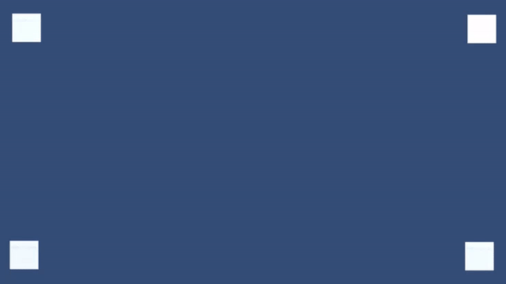

時光倒流，這個再熟悉不過的詞往往都會出現在各種電影、遊戲、動漫的背景設定中。
透過回顧已發生過的事件及事物，可以更加清楚的了解事情所發生的經過。
這次就來嘗試實作時光倒流，這個好玩又有趣的效果。
時光倒流機制的主要核心淺顯易懂，不依賴遊戲引擎所提供的時間軸，而依賴於自訂時間軸，使物體的移動、旋轉等透過自訂時間軸而產生變化。
public float Time
{
get { return _time; }
set
{
if (value != _time)
{
float deltaTime = value - _time;
UpdateTime(deltaTime);
_time = value;
}
}
}
private float _time;在最初，先透過一個簡單的介面來定義時間軸的變化。
任何需要與自訂時間軸互動的行為，都需要繼承並實作這個介面，使物體能夠隨時間而變化。
public interface ITimeMachine
{
void UpdateTime(float deltaTime);
}接著定義時光倒流時，所需要的回朔事件結構。
using System;
public class RewindAction
{
public float m_time;
public Action m_action;
public RewindAction(float time, Action action)
{
m_time = time;
m_action = action;
}
}透過這個唯一的時間軸管理器來註冊、反註冊所有物件、回朔事件以及時間軸更新。
只需要調用 TimeMachineManager.Instance.Time 就可以相當簡單的改變所有已註冊物件的時間軸。
using System;
using System.Collections.Generic;
public class TimeMachineManager
{
public static TimeMachineManager Instance
{
get
{
if (null == _instance)
{
_instance = new TimeMachineManager();
}
return _instance;
}
}
private static TimeMachineManager _instance;
public float Time
{
get { return _time; }
set
{
if (value != _time)
{
float deltaTime = value - _time;
if (deltaTime < 0)
{
while(_rewindActions.Count > 0 && _rewindActions.Peek().m_time >= _time + deltaTime)
{
float curDeltaTime = _rewindActions.Peek().m_time - _time;
UpdateTime(curDeltaTime);
_rewindActions.Pop().m_action();
deltaTime -= curDeltaTime;
}
}
UpdateTime(deltaTime);
_time = value;
}
}
}
private float _time;
private List<ITimeMachine> _timeMachineList;
private Stack<RewindAction> _rewindActions;
public TimeMachineManager()
{
_timeMachineList = new List<ITimeMachine>();
_rewindActions = new Stack<RewindAction>();
}
public void RegistertimeMachine(ITimeMachine timeMachine)
{
_timeMachineList.Add(timeMachine);
}
public void UnregisterTimeMachine(ITimeMachine timeMachine)
{
_timeMachineList.Remove(timeMachine);
}
public void AddRewindAction(Action action)
{
_rewindActions.Push(new RewindAction(Time, action));
}
private void UpdateTime(float deltaTime)
{
foreach (ITimeMachine timeMachine in _timeMachineList)
{
timeMachine.UpdateTime(deltaTime);
}
}
}在這個範例中，所有被監控的行為都繼承了 BaseTimeMachine，透過繼承 BaseTimeMachine 來處理註冊及反註冊物件。
接著就可以處理任何想要透過自訂時間軸而產生變化的行為了。
using UnityEngine;
public abstract class BaseTimeMachine : MonoBehaviour, ITimeMachine
{
private void Awake()
{
TimeMachineManager.Instance.RegistertimeMachine(this);
Initialize();
}
private void OnDestroy()
{
TimeMachineManager.Instance.UnregisterTimeMachine(this);
}
public virtual void Initialize(){}
public abstract void UpdateTime(float deltaTime);
}
using UnityEngine;
public class LineMovementTimeMachine : BaseTimeMachine
{
public Vector3 Direction
{
get { return _direction; }
set { _direction = value; }
}
public float Speed
{
get { return _speed; }
set { _speed = value; }
}
[SerializeField] private bool _local;
[SerializeField] private Vector3 _direction;
[SerializeField] private float _speed;
public override void UpdateTime(float deltaTime)
{
if (_local)
{
transform.localPosition += _direction.normalized * _speed * deltaTime;
}
else
{
transform.position += _direction.normalized * _speed * deltaTime;
}
}
}using UnityEngine;
public class RotateTimeMachine : BaseTimeMachine
{
[SerializeField] private Vector3 _direction;
[SerializeField] private float _speed;
public override void UpdateTime(float deltaTime)
{
transform.Rotate(_direction.normalized * _speed * deltaTime);
}
}using System.Collections;
using System.Collections.Generic;
using UnityEngine;
public class ParticleSystemTimeMachine : BaseTimeMachine
{
private ParticleSystem _particleSystem;
private float _time;
public override void Initialize()
{
_particleSystem = GetComponent<ParticleSystem>();
_particleSystem.randomSeed = (uint)(new System.Random().Next());
}
public override void UpdateTime(float deltaTime)
{
_time += deltaTime;
_particleSystem.Simulate(_time, true, true);
}
}在上面的行為中，已經完成了很有趣的效果。但是在遊戲中，我們往往會有一些例外狀況需要處理，例如：顏色修改、實例化物件、隱藏物件…等。
為了註冊這些例外狀況，並產生相對應的處理，我們需要複寫並繼承抽象化類別。
using UnityEngine;
public abstract class BaseAction : MonoBehaviour
{
private void Awake()
{
Initialize();
}
protected abstract void Initialize();
public abstract void Action();
public abstract void RewindAction();
}using UnityEngine;
public class ColorAction : BaseAction
{
[SerializeField] private Color _color;
private Color _preColor;
private Material _material;
protected override void Initialize()
{
_material = GetComponent<Renderer>().sharedMaterial;
}
public override void Action()
{
if (_material.color == _color)
return;
_preColor = _material.color;
_material.color = _color;
TimeMachineManager.Instance.AddRewindAction(RewindAction);
}
public override void RewindAction()
{
_material.color = _preColor;
}
}using UnityEngine;
public class InvisibleAction : BaseAction
{
private Renderer _renderer;
protected override void Initialize()
{
_renderer = GetComponent<Renderer>();
}
public override void Action()
{
if (null == _renderer)
return;
if (!_renderer.enabled)
return;
_renderer.enabled = false;
TimeMachineManager.Instance.AddRewindAction(RewindAction);
}
public override void RewindAction()
{
_renderer.enabled = true;
}
}using UnityEngine;
using System.Collections.Generic;
public class InstantiateAction : BaseAction
{
[SerializeField] private GameObject _prefab;
[SerializeField] private int _instantiateNumber = 1;
private List<GameObject> _instances;
protected override void Initialize()
{
_instances = new List<GameObject>();
}
public override void Action()
{
GameObject cacheObj = null;
LineMovementTimeMachine cacheTimeline = null;
LineMovementTimeMachine thisTimeline = null;
thisTimeline = GetComponent<LineMovementTimeMachine>();
for (int count = 0; count < _instantiateNumber; count++)
{
cacheObj = Instantiate<GameObject>(_prefab);
cacheObj.transform.SetParent(transform.parent);
cacheObj.transform.position = GetRandomPosition(transform.position);
cacheTimeline = cacheObj.GetComponent<LineMovementTimeMachine>();
if (null != cacheTimeline && null != thisTimeline)
{
cacheTimeline.Speed = thisTimeline.Speed;
cacheTimeline.Direction = thisTimeline.Direction;
}
_instances.Add(cacheObj);
}
TimeMachineManager.Instance.AddRewindAction(RewindAction);
}
public override void RewindAction()
{
foreach (GameObject go in _instances)
{
Destroy(go);
}
}
private Vector3 GetRandomPosition(Vector3 position)
{
return position + new Vector3(Random.Range(-1.0f, 1.0f), Random.Range(-1.0f, 1.0f), 0);
}
}最後還可以再時光倒流時加入畫面濾鏡效果，讓倒流的效果更加明確。
這邊實作了基本的灰階濾鏡效果。
Shader "Hidden/GrayScaleImageEffectShader"
{
Properties
{
_MainTex ("Texture", 2D) = "white" {}
}
SubShader
{
Cull Off ZWrite Off ZTest Always
Pass
{
CGPROGRAM
#pragma vertex vert
#pragma fragment frag
#include "UnityCG.cginc"
struct appdata
{
float4 vertex : POSITION;
float2 uv : TEXCOORD0;
};
struct v2f
{
float2 uv : TEXCOORD0;
float4 vertex : SV_POSITION;
};
v2f vert (appdata v)
{
v2f o;
o.vertex = mul(UNITY_MATRIX_MVP, v.vertex);
o.uv = v.uv;
return o;
}
sampler2D _MainTex;
float _saturation;
fixed4 frag (v2f i) : SV_Target
{
fixed4 col = tex2D(_MainTex, i.uv);
float3 intensity = dot(col.rgb, float3(0.39, 0.59, 0.11));
col.rgb = lerp(intensity, col.rgb, _saturation);
return col;
}
ENDCG
}
}
}透過這個簡單的實作，可以了解到自訂時間軸所帶來的可控性，然而可控性的提升卻會造成便利性大幅下降的情況。
任何需要與時間軸互動的事件、物件，都需要額外實作功能及行為的腳本，沒辦法很方便及快速的進行功能擴充。
取而代之，若是將所有需要紀錄的物件，透過紀錄快照功能，將每一個時間點的物件行為紀錄並存取下來，或許就能夠相當真正的達到時間控制。
Github 連結
TimeMachine
參考資料
Time Manipulation – Level Creation
Time Manipulation – Rewinding Time
Unity的時間控制 – 建立關卡
Unity裡的時間操作 – 倒帶